Nook
A collaboration between Academy of Art University and Zoox , designing the digital experience for an autonomous micromobility pod.
The Brief
Design a compact autonomous micromobility pod for 1–2 occupants , filling the gap between a scooter and a compact car. Fully app-hailed, driverless, and accessible to riders of all abilities. The vehicle must democratize the last mile and the local loop.
While the team designed the physical vehicle (Nook), my focus was the digital layer: the app, the in-vehicle HUD, and the full interaction from boarding to arrival.
Research
User research revealed two distinct passenger types with different needs. Daily commuters prioritize efficiency, predictability, and privacy , they want a clean ETA and nothing else. City newcomers want the opposite: flexibility, discovery, and a sense of connection to an unfamiliar place.
Both groups shared core expectations: safety, comfort, and a feeling of control , even without a driver.
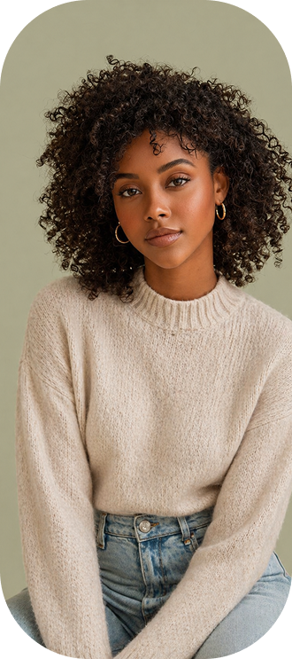
Sofia Reyes
New to San FranciscoSofia is new to San Francisco and wants to explore the city in a relaxed way.
She is interested in local landmarks, scenic routes, small restaurants, and hidden places, but she does not always know where to go or how to plan the route. Regular ride-hailing apps feel too functional , they only focus on getting from point A to point B.
For Sofia, Nook feels like a gentle city guide. She wants the ride to be part of the experience, not just transportation. Features like Scenic Route, Explore Mode, and landmark stories can help her feel more connected to the city , without over-planning.
Key needA relaxing and guided city exploration experience that combines transportation, local discovery, and scenic moments.
For this demo, we decided to focus on Sofia because her journey better shows Nook's unique experience.
She is not just commuting — she wants to explore the city, enjoy the scenery, and discover places around her.
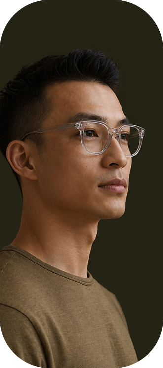
Jason Chen
Daily CommuterJason is a daily commuter living in San Mateo and working in downtown San Francisco.
He usually takes Caltrain, so his main goal is to move between home, station, and office with less stress. After work, he often feels tired and does not want to spend extra time comparing apps, waiting in the rain, or worrying about missing the next train.
For Jason, Nook is a reliable last-mile helper. He cares about timing, predictability, and simple information , the next Caltrain time, arrival estimate, a quick stop on the way. He wants the ride to feel calm, efficient, and easy to control.
Key needA predictable and low-stress short-distance ride that connects smoothly with public transit.
The App Flow
Both Sofia and Jason are Nook users. Jason's needs are clear: efficiency, reliability, and low friction. Existing ride-hailing apps can solve that, and solving it well is enough.
Sofia's needs are harder. She does not just want to arrive. She wants to feel the city while moving through it. The app addresses this through a single choice at booking: Direct or Scenic. A faster route, or one that passes through Fisherman's Wharf and Golden Gate Bridge. The decision happens before the ride begins, not buried in settings.
Along the way, passengers can also place a pickup order from nearby restaurants, turning the ride into something more than transportation.
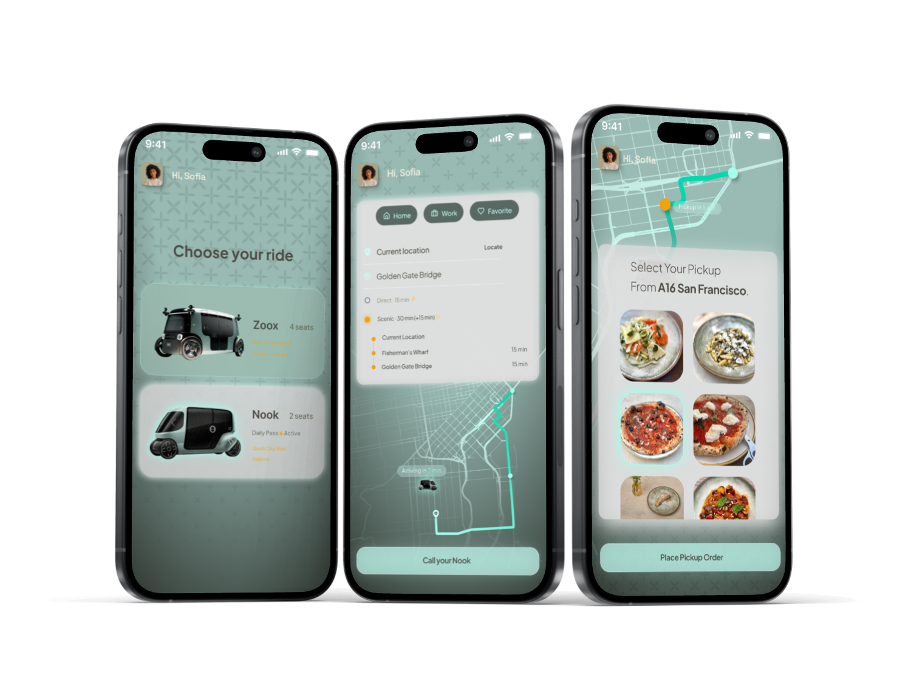
Boarding Experience
When approaching Nook, passengers can unlock the vehicle from their phone or smartwatch. The unlock animation extends the circular symbol from the vehicle door, creating a more cohesive visual language across the physical and digital touchpoints.
Once inside, soft ambient music plays as the HUD comes to life. Information appears gradually, like fog gathering, greeting the passenger by name and confirming the next stop and destination. A hand gesture prompt then invites them to swipe up and begin the ride.
As the ride begins, the interface steps back. Text fades and disperses, leaving the outside view as the main focus. The HUD returns only when there is something worth showing, reinforcing the idea that the screen is a tool, not the main event — the city is.
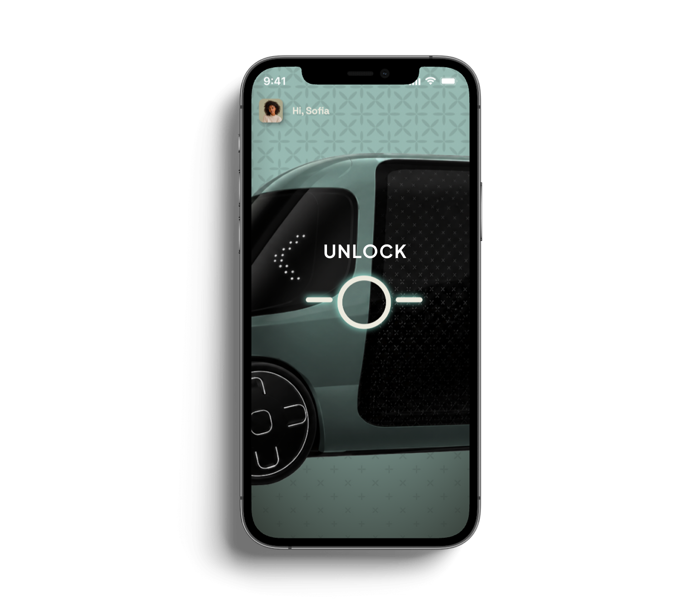
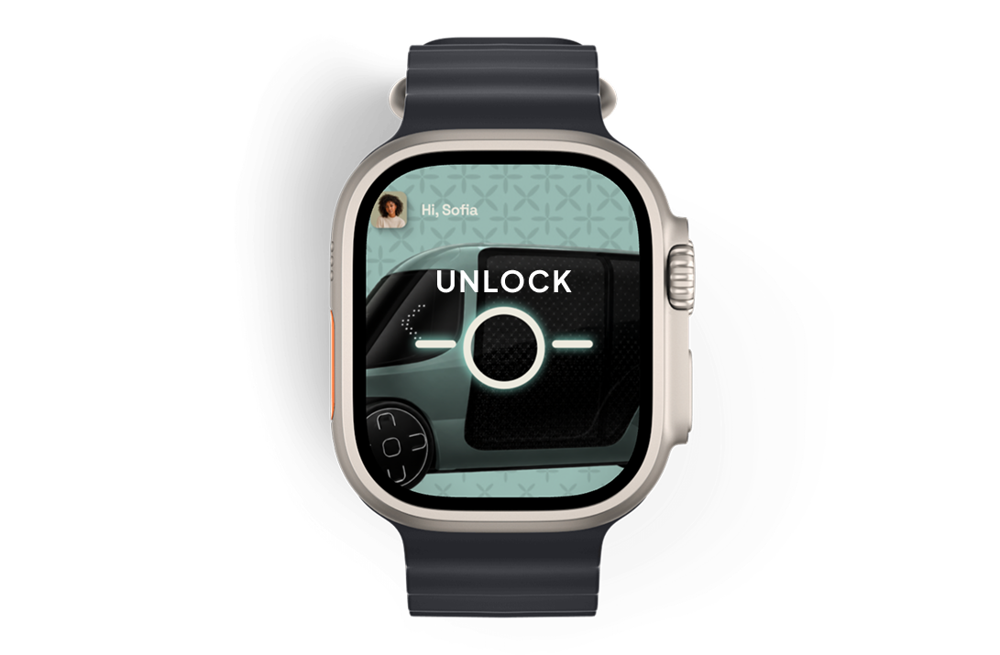
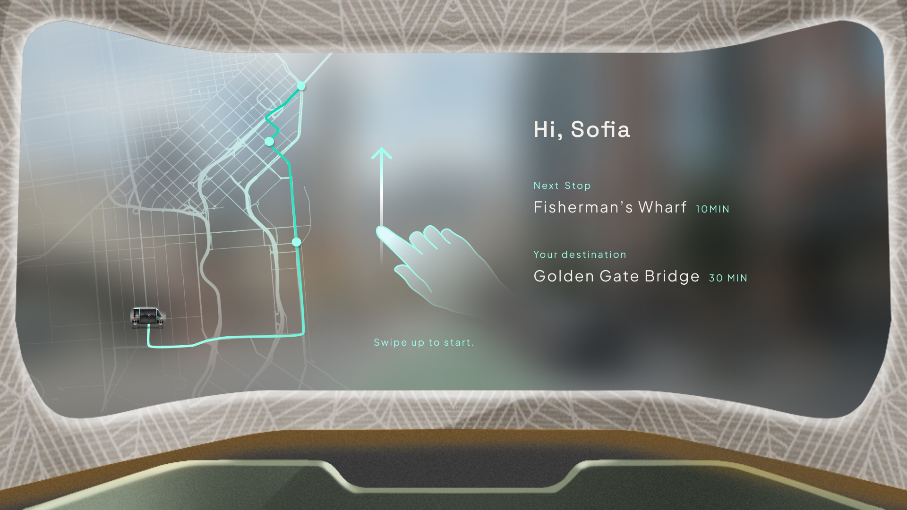
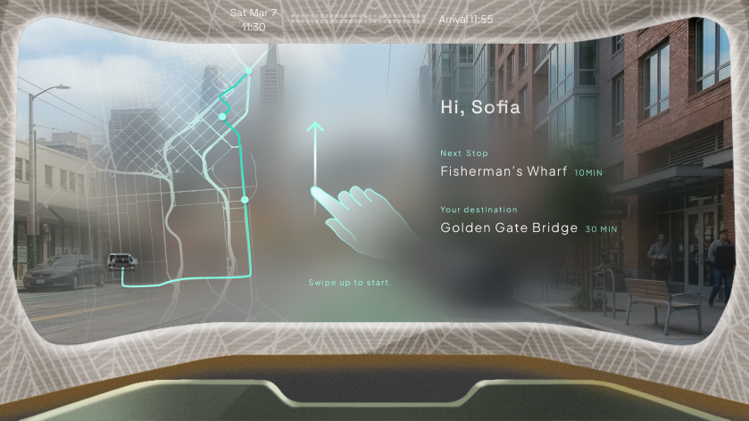
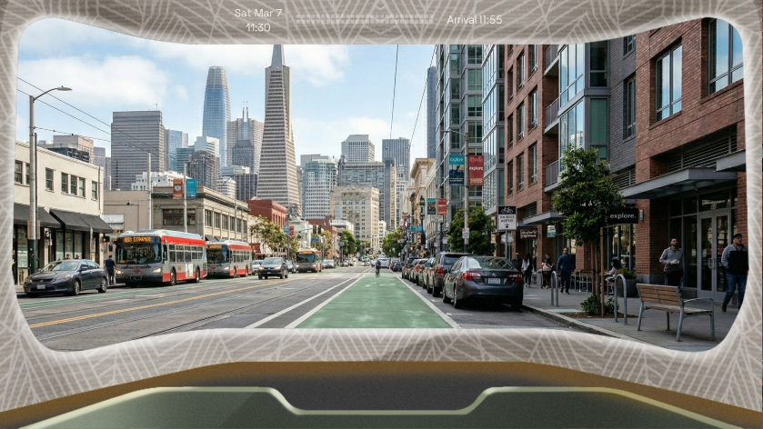
In-Vehicle HUD
As the vehicle approaches a landmark, the HUD surfaces a 3D model of the location alongside basic information: the name, a short description, and its distance from the current position. The information appears briefly, then fades, keeping the screen uncluttered for the rest of the ride.
The intent is not to turn the ride into a tour. It is to give passengers just enough context to feel oriented in the city, without requiring them to look anything up.
Icon System
A custom dot-matrix icon system for the in-vehicle interface. Each icon is built on a 12×12 binary grid , consistent, scalable, and visually distinct from standard UI icons. The style references the display aesthetic of classic transit systems.
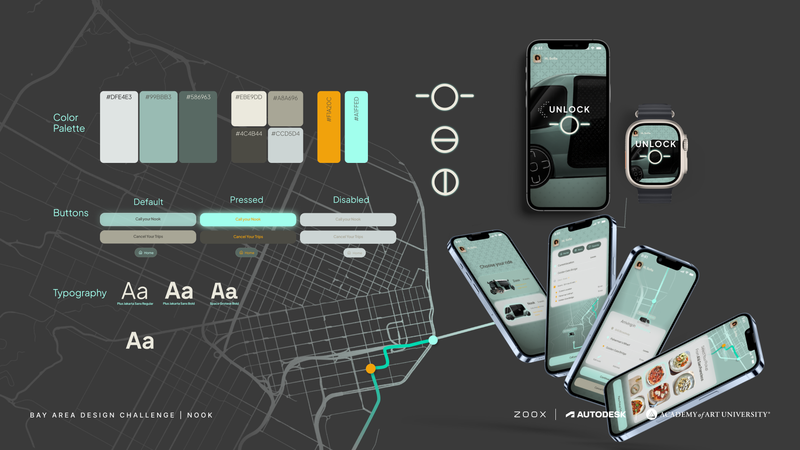
City Map
A minimal line-art map of San Francisco built from real OSM street data, with 5,988 road segments rendered as fine white strokes. I built this through vibe coding, generating and refining the map programmatically from raw geographic data.
A mask layer highlights the relevant area as the vehicle moves through the city, drawing the passenger's attention to their current location without cluttering the rest of the display.
Outcome
The project was presented to the Zoox team. Explore Mode reframes the autonomous vehicle not just as transportation infrastructure, but as a way to help people feel at home in a new city — without a guide, a map app, or a driver.
Awarded Most Innovative at the Bay Area Design Challenge.
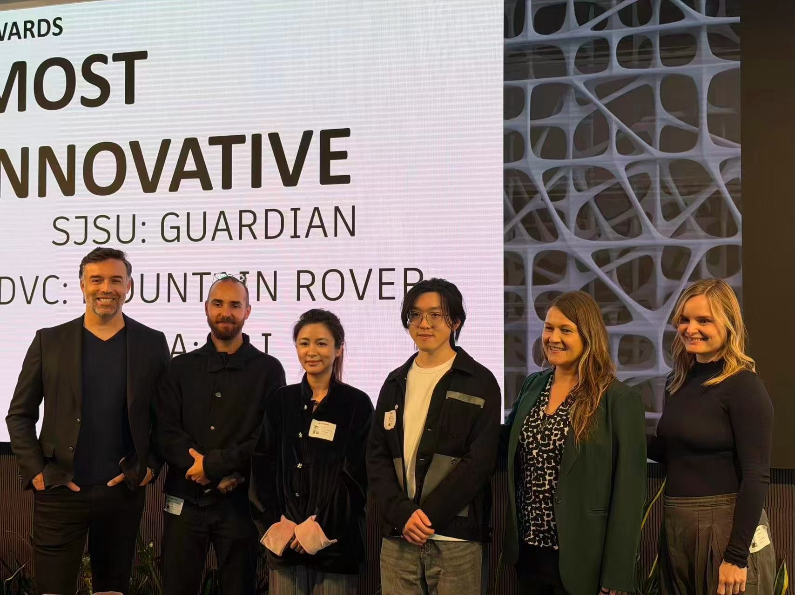
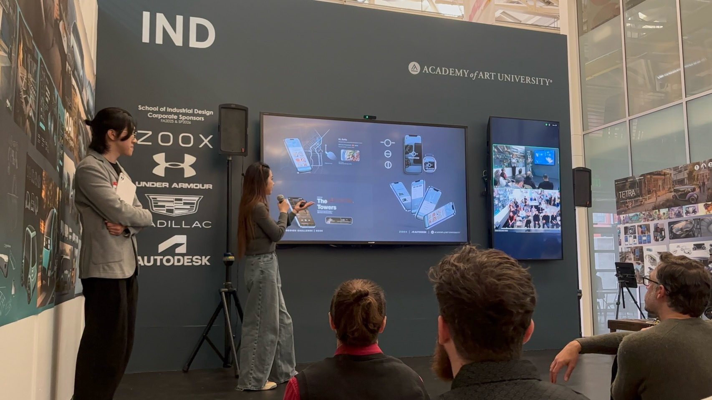